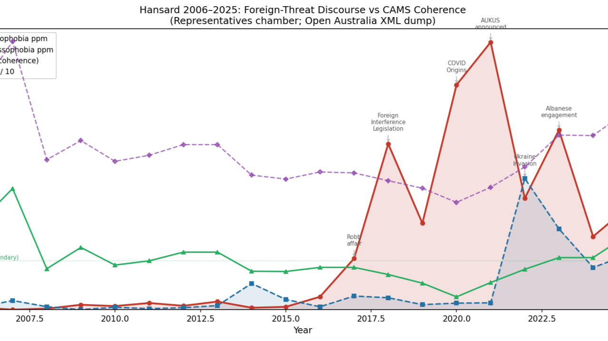
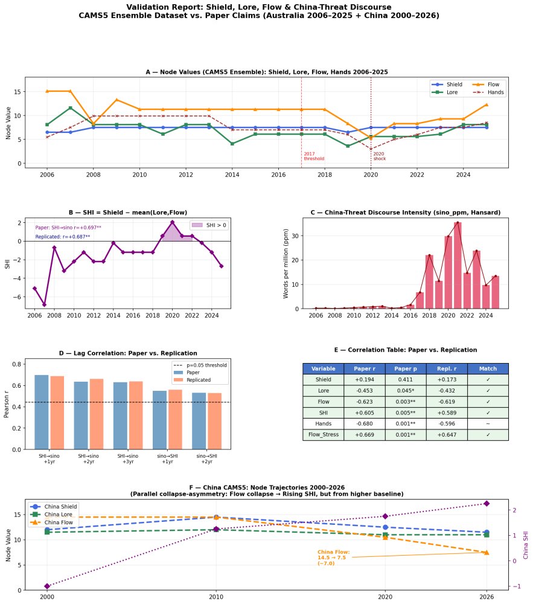
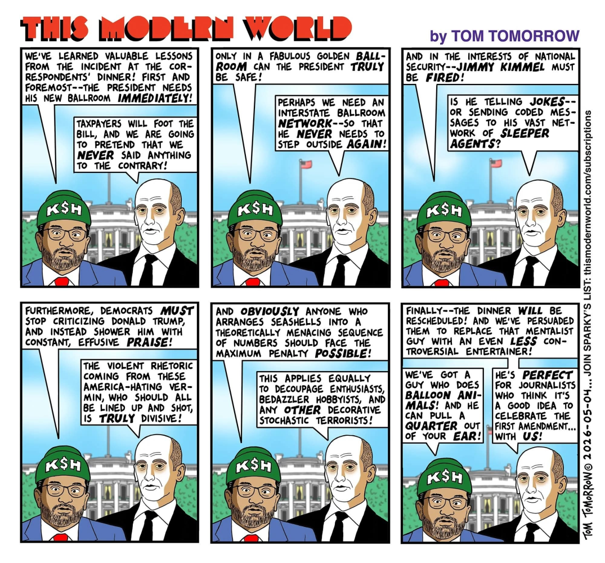

When does Australia sense enemies? 55 million newspaper documents, 20 years of Hansard, and the CAMS structural record — crossed for the first time.
I haven't been posting for a few days while I went over the results. Here they are.
Our baseline is the Australian CAMNATIONS5 ensemble — five independent AI scorers running identical prompts against the same historical evidence, producing institutional health scores for Australia across eight functional nodes from 1875 to 2026. When five independent scorers converge on a result, they are converging on something the historical record was already carrying, waiting to be read. That was what we brought to the Trove and Hansard archives.
The core question
Does foreign-threat discourse track internal structural conditions, or does it track the actual behaviour of foreign states? The answer is the kind that rearranges furniture in your head.
Two Archives, Two Eras
NLA Trove · Historical arm
55 million digitised newspaper documents, 1900–1955. Annual frequencies of China-referential and Russia-referential language, normalised per million words — from Yellow Peril panics through two World Wars to the early Cold War.
Hansard · Contemporary arm
Full text of House of Representatives debates, 2006–2025. How Australian parliamentarians are actually talking about China, working-class grievance, housing, wages, and cost of living — year by year.
Both were cross-referenced against the CAMS structural scores for Australia: system coherence, institutional stress, bond strength between nodes, and the praet_gap — the divergence between the Shield node and overall system health. That last metric is the structural signature of a society beginning to militarise its response to internal failure, which is a different problem from external threat and has a different solution.

Hansard 2006–2025: Sinophobia discourse (red) and Russophobia (blue) vs CAMS Coherence (purple dashed). Key events annotated: Foreign Interference Legislation, Robin affair, COVID Origins demand, AUKUS, Ukraine, Albanese engagement.
Three Distinct Regimes
The results revealed three distinct regimes of foreign-threat discourse — not one, which is where most received opinion quietly departs the building.
"Prosperity Ideology"
Early Federation · Menzies boom years
Threat-coded China discourse rose with system health. The Yellow Peril was not produced by anxiety — it was produced by confidence. White Australia policy was the self-expression of a cohesive, prosperous, outward-facing society asserting its foundational exclusions from a position of strength. Deeply disturbing, structurally coherent, and not the modern pattern at all.
"Stress Projection"
2017–2021 · Hansard data
Rising Sinophobia in parliamentary speech is preceded — by one to three years — by deteriorating CAMS metrics: falling system coherence, rising institutional stress, declining bond strength between nodes. The discourse follows the structural deterioration like a shadow following a man who would prefer not to examine it. The system gets sick first. It finds the enemy second.
"Event Response"
1948 Cold War crystallisation · 2022 Ukraine shock
Genuine reactions to external events. Real, contemporaneous, and typically fast-decaying — distinguishable from stress projection by their timing and their fade. A third category that prevents the model from reducing everything to projection.
The 2017–2021 surge exceeds what the structural baseline alone predicts — something was actively amplifying it. The amplification tracks the political alliance rather than any new Chinese behaviour, and it unwound in the Sinophobia register when the Albanese government changed diplomatic posture from 2022. The domestic grievance signal did not unwind with it, because that signal had its own structural roots — and those roots were real and separate.

Validation Report: CAMS5 Ensemble vs paper claims. Panel A: Shield, Lore, Flow, Hands node values 2006–2025. Panel B: SHI (Shield − mean(Lore, Flow)). Panel C: China-Threat Discourse Intensity. Panel D: Lag correlation (1–4yr). Panel E: Correlation table. Panel F: China CAMS5 node trajectories 2000–2026.
The Hands Register
The finding that surprised me more than the Sinophobia result
The CAMS Hands node tracks labour and workforce health — wages, job security, demographic vitality, the basic material conditions of working life. Cross-referenced against parliamentary grievance discourse on cost of living, housing affordability, and wage stagnation, we found a two-year lead relationship. Hands deteriorate and two years later the grievance language in parliament surges.
−0.753
Spearman r (Hands lead vs parliamentary grievance discourse)
p=0.0003
Statistical significance — strong enough to be embarrassing to ignore
2 years
Lead time: Hands deteriorates first, grievance language follows
More striking still: the 2024 cost-of-living crisis, standardised against its own historical baseline, produces grievance discourse exceeding 1931 in proportional terms — +2.54 versus +2.37 standard deviations above baseline. The Hands floor was deeper in the Depression. But Australians today are talking about economic pain more, relative to recent norms, than their grandparents talked about the Depression relative to theirs.
The good news is that Hands has been recovering — rising from a floor of 3.0 in 2020 to approximately 8.5 in 2025 and 2026, the first time since the late 1940s that it marginally exceeds the Stewards node. On the two-year lead model, grievance discourse should begin easing measurably by 2027 and 2028. The language of struggle tends to peak not at the moment of maximum pain, but during the fight for recovery — when gains are actively contested rather than settled. We may be at or near that peak now.
Epiphenomenal Validation

This Modern World by Tom Tomorrow. A late-stress executive regime: Helm fragility drives Lore distortion, Shield overreach, Archive suppression, and Flow capture. The system is still producing outputs, but its feedback loops are inverted. Reality no longer corrects power; power attempts to correct reality. CAMS names this structure — the comic illustrates it.
Why This Matters
The Trove and Hansard results do not tell us that China poses no strategic challenges, or that all threat perception is manufactured. What they tell us is that the volume and intensity of enemy discourse has historically been more reliably predicted by internal structural conditions than by the actual behaviour of the named adversary.
The enemy factory
The enemy factory does not require a real enemy. It requires a sick system and an available name. A society that understands this is harder to manipulate. The two problems — genuine external risk and stress projection — are not the same problem and do not have the same solution.
Methodology: Trove: NLA Trove API v3, newspaper category, 1900–1955. Frequencies normalised against baseline word ("the") to produce ppm measures comparable across years. Hansard: XML files from the Open Australia Foundation, House of Representatives debates 2006–2025. CAMS data: CAMNATIONS5 ensemble means 1875–2026, five independent scorers, eight nodes, four metrics. Statistics: Spearman rank correlation, OLS regression, Mann-Whitney U, lag-correlation analysis, z-score normalisation. Results quoted pass p < 0.05 unless noted. Hansard regression (n ≈ 20 years) is noted as suggestive structural evidence. Conducted: May 2026, Epiphenomenon@Trove project.
Sinophobia 2017–2021: exceeds structural baseline — amplified by political alliance coordination, not new Chinese behaviour; unwound with Albanese diplomatic posture change from 2022
Hands → grievance two-year lead: Spearman r = −0.753 (p=0.0003) — strong enough to be embarrassing to ignore
2024 cost-of-living crisis: +2.54σ grievance discourse vs +2.37σ in 1931 Depression — Australians today talk about economic pain proportionally more than their grandparents did
Hands recovery 2020→2026: 3.0 → 8.5 — on the two-year lead model, grievance discourse should ease measurably by 2027–28
The data are open. The methodology is documented. Rigorous scepticism is not a challenge to this project. It is the point.